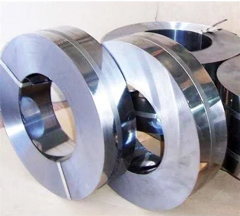

Product sheet · AI / CR / 02
Cold rolled high carbon steel strips
Hot rolled steel processed further in cold reduction mills at room temperature, followed by annealing and/or temper rolling. The result is strip with a wide range of surface finish and closer thickness tolerances.

Specification
- Thickness
- 0.20 to 4.50 mm
- Width
- 12.5 to 450 mm
- Finish
- A wide range of surface finishes
- Edges
- Slit to width
- Hardness
- High tensile strength, yield strength and hardness
- Grades
- 14 carbon and alloy grades, cross-referenced to 8 standards
Grades: see the full chemistry and international equivalents on the grades page. Tell us which grade and standard your drawing calls for.
02Properties
What cold rolling gives you
- 01
Surface
A wide range of surface finishes, from the rolls rather than from polishing.
- 02
Tolerance
Closer thickness tolerances than hot rolled strip.
- 03
Strength
High tensile strength, yield strength and hardness, with a corresponding decrease in ductility.
03Applications
What our cold rolled strip becomes
Saw blades
Hack saw and power saw blades, and all types of carbon saws.
Automotive
Clutch parts and horn diaphragms; seat belt parts and brake assemblies; chain links, circlips and washers.
Compressors and engineering
General engineering strip springs.
Medical and office
Medical and surgical blades; stapler springs.
04Not CRCA
Cold rolled spring steel, not CRCA
In India, CRCA usually means cold rolled close annealed low carbon steel for car bodies and appliances. Our cold rolled strip is high carbon and alloy steel, from C 45 to C 120 and 50CrV4 to 75Ni8, for parts that are hardened. If you need the part ready-hardened, see hardened and tempered strip.
05Questions
Questions about cold rolled strip
Q01What is the difference between cold rolled and hardened and tempered strip?
Cold rolled strip is hot rolled steel processed further in cold reduction mills at room temperature, followed by annealing and/or temper rolling. It gives a wide range of surface finishes and closer thickness tolerances, and it is usually hardened after the part is made. Hardened and tempered strip has already been quenched and tempered, so the part keeps its spring hardness straight off the press.
Q02Is your cold rolled strip the same as CRCA?
No. In India CRCA usually means cold rolled close annealed low carbon steel for car bodies and appliances. Our cold rolled strip is high carbon and alloy steel, from C 45 to C 120 and 50CrV4 to 75Ni8, for parts such as saw blades, circlips and springs.
Q03Is C75 the same as CK75 or C75S?
They describe practically the same steel of 0.70 to 0.80% carbon. CK 75 is the older German DIN 17222 name and C75S is the current European EN 10132 name. The closest equivalents are SAE 1074 / 1075, BS 970 EN 42J, JIS S75C / SK6 / SUP3 and IS 2507 75C 6. Equivalents are close, not identical, so always compare the chemistry.
Q04What should I include in a quote request?
The grade and the standard it is specified to, thickness and width with tolerances, edge, finish, hardness, coil or cut length, the quantity and your delivery location. Our quote form lays these out for you.
Request for quotation
Quote for cold rolled strip
Send the grade, thickness, width, finish, edge and quantity. We reply by email.
Or call +91 99999 07396